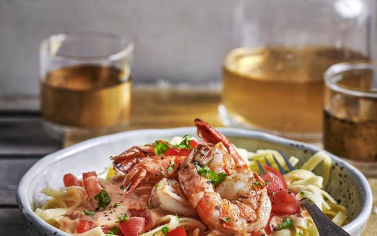

pasta diabolique met scampi
Ingredienten
- 400g pasta
- 2 sjalotten
- 4 pruimtomaten
- 3eetlepels peterselie
- 1borrelglaasje cognac
- 0.5kl cayennepeper
- 24 scampi's
- 2teentjes knoflook
- 1 rode chilipeper
- 250ml room
- 150ml droge witte wijn
- olijfolie
- peper en zout
Bereiding
- Kook de tagliatelle beetgaar, volgens de aanwijzingen op de verpakking.
- Pel en snipper de sjalotten en knoflook. Spoel de tomaten, verwijder de zaadjes en snij het vruchtvlees in blokjes. Maak het chilipepertje schoon en snipper fijn.
- Verhit een pan met wat olijfolie en bak er kort de scampi’s in. Haal ze uit de pan zodra ze rozig kleuren. Doe nog wat olie in de pan en bak er de sjalotten en de knoflook in. Blus met het borrelglaasje cognac en de witte wijn. Laat even inkoken..
- Voeg de tomatenblokjes, de chilipeper en de cayennepeper toe. Roerbak en voeg dan de room toe. Laat opnieuw even inkoken en voeg dan de scampi’s toe.
- Serveer de scampi’s met de saus en de tagliatelle. Werk af met de peterselie.